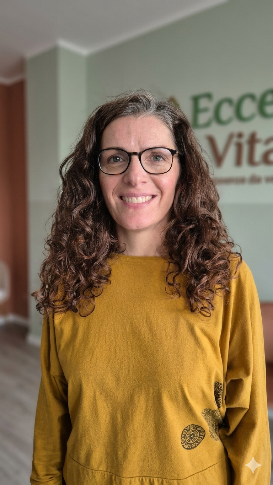
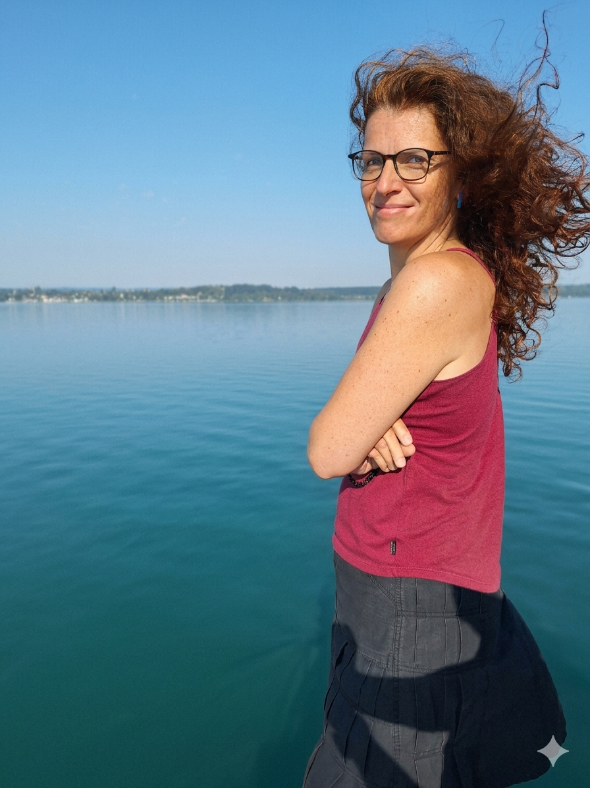

Klinická nutriční medicína
Terapeutka · Iridoložka · Průvodkyně ke zdraví
Pomáhám lidem porozumět svému tělu — prostřednictvím iridologie, hormonální diagnostiky a individuálně nastavené stravy. Přistupuji ke každému klientovi jako k jedinečnému celku, ne jen souboru symptomů.
Jakými oblastmi se zabývám
Níže jsou oblasti, na které se ve své praxi nejčastěji zaměřuji, ve kterých využívám primárně metodu iris diagnostiky
— Každý z nás je individuální a tak vždy vycházíme z toho, co potřebujete právě vy.
vhodnou stravou a jejími doplňky můžeme zmírnit příznaky nerovnováhy centrální nervové soustavy.
Více o specializacích →Únava, přibývání na váze, poruchy nálad nebo spánku — za těmito příznaky se často skrývá hormonální nerovnováha.
Více o specializacích →Sestavím jídelní plán šitý na míru vaší konstituci, zdravotnímu stavu a každodennímu rytmu — bez dogmat a striktních diet.
Více o specializacích →Nadýmání, reflux, dráždivý tračník nebo nepravidelná stolice — hledáme příčinu, ne jen potlačujeme příznaky.
Více o specializacích →O mně
Každý klient přichází s jedinečným příběhem. Mým úkolem není jen poradit, co jíst nebo nejíst — ale pomoci vám porozumět signálům, které vaše tělo vysílá, a najít cestu zpět k přirozené rovnováze.
Vystudovala jsem nutriční medicínu na Škole klinické naturopatie, kde v současné době vyučuji obor "Bylyny" a následně absolvovala specializaci v iridologii. Spolupracuji s DDM Stodůlky či Mětskou knihovnou v Kolíně, kde přednáším veřejnosti o tématech spojených s mou praxí. Svou praxi jsem spojila s krásným prostorem centra Ecce Vita, kam za mnou můžete dorazit ve čtvrtek čí pátek. Po dohodě se můžeme potkat v SAWA Centru v Nymburce, ve kterém také pořádáme přednášky o zdravém stravování a tématech spojených s mou praxí. Pracuji s klienty osobně i online.
Ráda kombinuji moderní poznatky nutriční vědy s holistickým pohledem na zdraví — tělo, mysl a životní styl jako celek.

Ceník
První konzultace trvá zpravidla 2 hodiny. Před prvním setkáním Vám zašlu formulář, který je potřeba pečlivě vyplnit předtím, než se uvidíme. Formulář je základním stavebním kamenem naší spolupráce, jelikož obsahuje celostní informace o vašich stravovacích návycích, aktuálních obtížích a dalších faktorech, které ovlivňují celkový zdravotní stav jak fyzické, tak psychické stránky každého z nás.
Zarezervovat termín →Objednávka
Vyberte si čas, který vám vyhovuje. Po potvrzení obdržíte automatické připomenutí e-mailem.
Kde mě najdete
U Pernikářky 111/2a, Praha 5
Čtvrtky a pátky
PrahaTyršova 172, Nymburk
Po individuální domluvě
NymburkE-mail: [email protected]